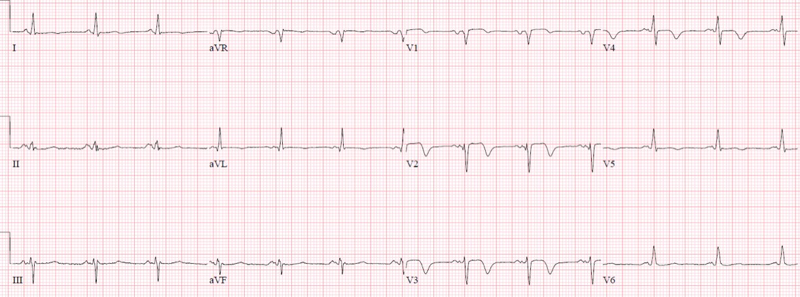
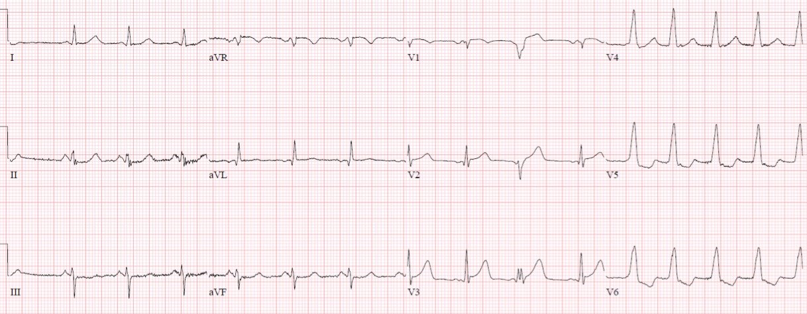
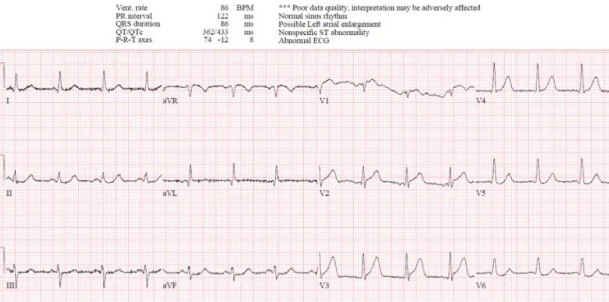
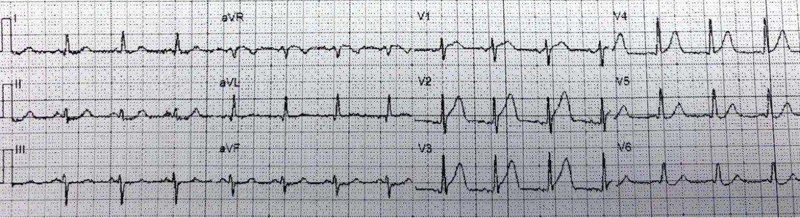
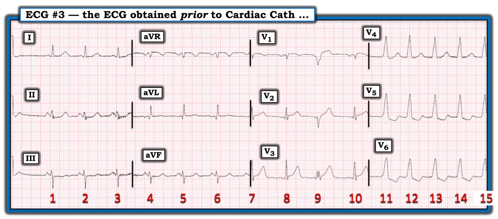
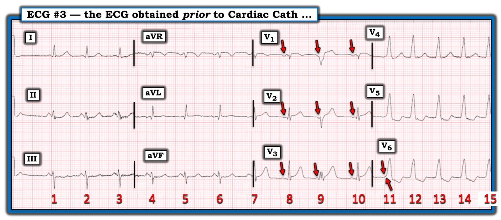

13/09/2022 — Đau ngực, troponin đỉnh 100,000 ng/L và điện tâm đồ này lúc ra viện: chẩn đoán là gì?
Bản dịch tiếng Việt của bài "Chest pain, peak troponin 100,000 ng/L and this ECG on discharge: what’s the diagnosis?" – Dr. Smith’s ECG Blog. Giữ nguyên toàn bộ 7 hình ảnh của bản gốc.
Bài viết của Jesse McLaren, Smith biên tập
Thông thường các ca bệnh được trình bày theo
trình tự thời gian, đúng như cách chúng diễn ra ngoài đời thực. Nhưng ca này sẽ được
trình bày theo trình tự thời gian ngược. Ở mỗi bước, chúng ta sẽ đặt câu hỏi
“chẩn đoán là gì?” theo mô hình STEMI (đây là STEMI hay NSTEMI?) và
theo mô hình OMI (đây là nhồi máu cơ tim do tắc hay nhồi máu cơ tim không do tắc?).
Ra viện
Một bệnh nhân 60 tuổi không có tiền sử bệnh tim được nhập viện
vì đau ngực, có troponin đỉnh 100,000 ng/L (bình thường <16 ở nữ và <26 ở nam), và ra viện với
điện tâm đồ dưới đây (#4). Chẩn đoán là gì?


Nhịp xoang bình thường, dẫn truyền bình thường, trục bình thường
và điện thế bình thường. Có mất sóng R ở V2-3 và sóng T đảo ngược do tái tưới máu
rõ ở V2-4, kín đáo hơn ở I/aVL/V5, cho thấy tái tưới máu LAD đoạn gần sau nhồi máu thành trước (tức là không phải
Wellens).
Đây là STEMI hay NSTEMI? Chúng ta không thể nói được, vì chúng ta
không biết có ST chênh lên trên điện tâm đồ trước khi chụp mạch vành hay không. Vì vậy,
bất kể kết quả chụp mạch vành, troponin đỉnh, hay bằng chứng tái tưới máu,
mô hình STEMI không thể trả lời, ngay cả khi nhìn lại, câu hỏi cơ bản “chẩn đoán là gì” nếu không có
điện tâm đồ ghi trước khi chụp mạch vành. Nhưng với mô hình OMI, chúng ta có thể chẩn đoán
tắc LAD đã dẫn đến mất sóng R (kèm troponin đỉnh rất cao) trước khi
tái tưới máu.
Chụp mạch vành
Hãy quay ngược thời gian về lúc chụp mạch vành: tắc 100% LAD
đoạn gần. Đây là STEMI hay NSTEMI? Chúng ta vẫn không thể nói được, vì mô hình STEMI
không dựa trên chụp mạch vành, và 25% “NSTEMI” có động mạch tắc
hoàn toàn. Mặt khác, rõ ràng chúng ta có thể gọi đây là nhồi máu cơ tim do tắc
dựa trên chụp mạch vành. Nhưng ngay cả khi động mạch đã mở hoàn toàn (dòng chảy TIMI-3) vào lúc
chụp mạch vành (như 20% “STEMI”), chúng ta vẫn có thể nói đã có OMI dựa trên
troponin đỉnh rất cao (so với nhồi máu cơ tim không do tắc, với động mạch mở và troponin đỉnh
thấp), và điện tâm đồ sau chụp mạch cho thấy sóng T đảo ngược do tái tưới máu.
Ghi chú của Smith: hơn 30% động mạch đã mở với dòng chảy TIMI-1, _2 hoặc -3, 20% với TIMI-3
Trước chụp mạch vành
Hãy lùi xa hơn nữa về điện tâm đồ (#3) trước thông tim, tới lúc
bác sĩ khoa cấp cứu đánh giá và ghi lại điện tâm đồ: bệnh nhân đã đau ngực 7 giờ, kháng trị với nitro,
troponin ban đầu tăng ở mức 300 ng/L, có một loạt VT, và rối loạn vận động thành khu trú
vùng trước trên siêu âm tại giường: đây là STEMI hay NSTEMI?


Chỉ có ST chênh lên dạng lõm rất ít ở V2-3,
không đạt tiêu chuẩn STEMI. Vì vậy điện tâm đồ này, kèm troponin tăng, sẽ là
“NSTEMI.” Thế nhưng chính tình huống này lại cho phép chẩn đoán OMI nhờ nhiều yếu tố không chỉ giới hạn ở điện tâm đồ: bệnh nhân đau ngực kháng trị, troponin tăng, mất ổn định điện học với một loạt VT và rối loạn vận động thành khu trú vùng trước. Đây là những chỉ định tái tưới máu cấp cứu theo mô hình hiện hành, nhưng hiếm khi được tuân theo.
Phân loại (triage)
Hãy lùi xa hơn nữa về điện tâm đồ lúc phân loại tại khoa cấp cứu (#2), khi
bệnh nhân đã đau ngực 5 giờ. Đây là STEMI hay NSTEMI?


Ở đây sóng R bình thường. Chỉ có ST chênh lên nhẹ ở vùng trước,
không đạt tiêu chuẩn STEMI, nhưng cũng có sóng T
tối cấp, và ST chênh xuống soi gương nhẹ ở các chuyển đạo trước tim bên và chuyển đạo chi dưới.
Vì vậy đây vẫn là “STEMI âm tính” nhưng đã đủ chẩn đoán OMI, tức là OMI STEMI âm tính (STEMI(-)OMI).
Đội cấp cứu ngoài viện (EMS)
Bây giờ hãy quay về lúc bắt đầu, tới điện tâm đồ của EMS (#1), khi
bệnh nhân đã đau ngực 4.5 giờ: đây là STEMI hay NSTEMI?


Sóng T tối cấp ở vùng trước rõ hơn, và ST
chênh lên ở V2 nhiều hơn, và GẦN NHƯ có biến dạng phần cuối QRS ở V3. Có người sẽ gọi đây là STEMI, có người thì không (độ tin cậy giữa những người đọc kém ngay cả với tiêu chuẩn STEMI cơ bản), nhưng nó
đủ để chẩn đoán tắc LAD.
(Giá trị công thức = 18.9, cao hơn ngưỡng 18.2 cho tắc LAD; ST chênh lên tại điểm J có vẻ là 2mm ở cả V2 và V3, mức này sẽ đạt tiêu chuẩn STEMI cho cả nam và nữ)
Trình tự thời gian và nhận diện OMI theo thời gian thực
Bây giờ hãy xem ca bệnh đã diễn tiến thế nào theo trình tự thời gian.
-Bệnh nhân được nhân viên cấp cứu ngoài viện đưa đến dưới dạng báo động STEMI (Code STEMI) dựa trên
điện tâm đồ của họ (#1)
-Được bác sĩ tim mạch khám tại khoa cấp cứu, với điện tâm đồ ghi lại (#2); cả hai đều được quy cho
tái cực sớm và hủy kích hoạt phòng thông tim
-Được bác sĩ khoa cấp cứu khám 2 giờ sau, khi đã có kết quả troponin.
Bệnh nhân đau kháng trị, rối loạn vận động thành khu trú vùng trước trên POCUS,
và điện tâm đồ ghi lại (#3) cho thấy mất ổn định điện học: hội chẩn khẩn (STAT) tim mạch để
xem xét lại việc thông tim
-Được đánh giá lại và kích hoạt phòng thông tim: tắc 100% LAD đoạn gần, thời gian từ cửa đến bóng (door-to-balloon)
5 giờ, với troponin đỉnh 100,000 ng/L (đây là một nhồi máu cơ tim rất lớn)
-Điện tâm đồ lúc ra viện (#4) cho thấy
mất sóng R và sóng T đảo ngược do tái tưới máu
Nhìn lại, dựa trên chụp mạch vành và troponin đỉnh, bệnh
nhân đã bị tắc LAD dẫn tới nhồi máu cơ tim rất lớn, và lẽ ra đã được hưởng lợi
từ tái tưới máu sớm hơn. Vì vậy bệnh nhân nên được phân loại là OMI, để
chúng ta có thể lần ngược lại, tìm mọi dấu hiệu lâm sàng, điện tâm đồ và POCUS có thể
nhận diện OMI và dẫn tới tái tưới máu sớm. Nếu học được những dấu hiệu này, chúng ta có thể nhận diện
OMI một cách tiến cứu: tôi đã gửi điện tâm đồ phân loại đầu tiên (#2) cho Dr. Smith mà không kèm
thông tin nào (và không kèm điện tâm đồ trước đó hay điện tâm đồ ghi lại), và ông lập tức trả lời: “Tắc
LAD”. Tiếp theo đó là các dấu hiệu OMI khác—đau kháng trị, mất ổn định
điện học và rối loạn vận động thành khu trú—đã dẫn tới việc kích hoạt phòng
thông tim dù điện tâm đồ không đạt tiêu chuẩn STEMI.
Nhưng vì không có điện tâm đồ nào được đọc là đạt tiêu chuẩn STEMI,
chẩn đoán ra viện là “NSTEMI”. Phân loại tắc mạch vành cấp theo
việc điện tâm đồ trước thông tim có đạt tiêu chuẩn STEMI hay không cũng giống như phân loại viêm ruột thừa
theo việc bạch cầu (WBC) ban đầu có tăng hay không, bất kể kết quả
CT. Chúng ta sẽ không bao giờ trì hoãn chụp CT nhiều ngày chỉ vì một người có
đau hố chậu phải (RLQ) di chuyển kèm sốt/nôn có số lượng bạch cầu bình thường, vì chúng ta biết đó là một
dấu ấn thay thế kém, vừa không nhạy vừa không đặc hiệu, và dựa vào sự
phân đôi này sẽ dẫn tới kết cục xấu. Thế nhưng người ta lại dựa vào tiêu chuẩn STEMI để
quyết định tái tưới máu, trong khi tiêu chuẩn này còn kém nhạy với OMI hơn cả bạch cầu đối với
viêm ruột thừa, và trong khi tắc mạch vành cấp còn gây tử vong nhiều hơn.
Sự phân đôi STEMI/NSTEMI cũng làm suy yếu dữ liệu và công tác cải tiến chất lượng:
việc kích hoạt của EMS sẽ bị xếp vào loại kích hoạt không phù hợp thay vì
hủy kích hoạt không phù hợp, và thời gian từ cửa đến bóng 5 giờ
sẽ không được đánh dấu là một cơ hội cải tiến mà sẽ bị chôn vùi giữa
tất cả các ca không phải OMI trong cơ sở dữ liệu NSTEMI.
Điều cần nhớ
1.
Nhồi máu cơ tim nên được phân loại theo bệnh học thực sự
(nhồi máu cơ tim do tắc so với nhồi máu cơ tim không do tắc) thay vì theo cách đọc đơn giản điện tâm đồ
ban đầu (STEMI/NSTEMI), để chúng ta có thể lần ngược lại và học được các dấu hiệu của tắc mạch
2.
OMI STEMI âm tính có thể được nhận diện một cách tiến cứu—gồm
sóng T tối cấp, mất sóng R, và thay đổi soi gương—và nhận diện hồi cứu
nhờ sóng T đảo ngược do tái tưới máu
3. Chẩn đoán OMI không phụ thuộc vào điện tâm đồ, và
có thể bao gồm thiếu máu cục bộ kháng trị, mất ổn định điện học hoặc huyết động, và
rối loạn vận động thành khu trú
===================================
BÌNH LUẬN CỦA TÔI, bởi KEN GRAUER, MD (13/9/2022):
===================================
Một phần trình bày bậc thầy của Dr. McLaren, minh họa vì sao “mô hình STEMI” dường như phải bị xếp xuống vị trí thứ 2 trong việc ra quyết định chẩn đoán của chúng ta.
- Dĩ nhiên vẫn hợp lệ khi dùng thuật ngữ “STEMI cấp” — khi một bệnh nhân nhồi máu cấp thực sự biểu hiện “đủ mức” ST chênh lên trên điện tâm đồ để thỏa tiêu chuẩn milimét. Nhưng khăng khăng đòi phải đạt tiêu chuẩn STEMI trước khi can thiệp cho những bệnh nhân như bệnh nhân trong ca hôm nay, người biểu hiện quá rõ ràng tình trạng OMI ( = nhồi máu cơ tim do tắc — Occlusion-based MI) cấp tính — thì vừa là một cách làm sai lầm, vừa là nguyên nhân chính dẫn tới kết cục không tối ưu.
- Thất bại ngay cả sau khi sự việc đã rõ (tức là sau khi thông tim xác nhận tắc 100% LAD đoạn gần) — trong việc thừa nhận rằng nguyên nhân nhồi máu của bệnh nhân này là một động mạch vành bị tắc cấp (tức là một “OMI”) — là thêm một minh chứng của việc phớt lờ bằng chứng từ bệnh sử của bệnh nhân và các xét nghiệm chẩn đoán đã được thực hiện (tức là đau ngực kháng trị nhiều giờ — các dấu hiệu trên các điện tâm đồ liên tiếp như Dr. McLaren đã mô tả chi tiết ở trên — rối loạn vận động thành trước khu trú trên siêu âm tim — troponin tăng rất cao — và tắc hoàn toàn động mạch “thủ phạm” khi thông tim).
Dr. McLaren đã trình bày xuất sắc chi tiết của 4 điện tâm đồ liên tiếp được ghi trong ca hôm nay — gắn với các diễn biến lâm sàng và các xét nghiệm chẩn đoán khác trong quá trình ca bệnh tiến triển.
- Tôi tập trung Bình luận của tôi vào một số dấu hiệu bổ sung quan trọng trên điện tâm đồ thứ 3 trong ca hôm nay — mà tôi thấy rất thú vị! Cho rõ ràng — tôi đã đăng lại điện tâm đồ thứ 3 này (được ghi trước khi thông tim) trong Hình 1.
- LƯU Ý: Vì không có dải nhịp chuyển đạo dài ghi đồng thời — tôi đã đánh số 15 nhát bóp xuất hiện trên bản ghi này.
THỬ THÁCH:
- Hãy NHÌN LẠI điện tâm đồ #3 trong Hình 1. Bản ghi này được đọc là vẫn chưa thỏa tiêu chuẩn STEMI — mặc dù có một ít ST chênh lên ở các chuyển đạo V2,V3 — và có ST chênh xuống soi gương ở từng chuyển đạo thành dưới.
- May mắn là tổng hợp các “yếu tố khác” trong ca hôm nay (tức là đau ngực kháng trị nhiều giờ, troponin tăng, rối loạn vận động thành khu trú trên siêu âm tim) cuối cùng đã đủ để thuyết phục bác sĩ tim mạch hội chẩn tiến hành thông tim.
- Bạn còn thấy GÌ KHÁC trên điện tâm đồ #3?


Các dấu hiệu bổ sung trên điện tâm đồ #3:
- Ngoài ST chênh lên vừa phải ở chuyển đạo V2 và V3 — còn có ST chênh lên ở chuyển đạo V1. Hình dạng đoạn ST chênh lên này ở chuyển đạo V1 là dạng vòm — đây chắc chắn là một dấu hiệu bất thường ở chuyển đạo này (nhất là khi xét đến việc QRS ở chuyển đạo V1 nhỏ đến mức nào).
- Tự nó — phức bộ QS ở chuyển đạo V1 không nhất thiết là bất thường. Nhưng nó là bất thường khi đi kèm với sóng Q mà chúng ta thấy ở chuyển đạo V2 (sóng Q này không nên có mặt khi QRS chủ yếu dương ở chuyển đạo V2, như trên điện tâm đồ #3).
Dù vậy — 2 phần của điện tâm đồ #3 mà tôi thấy thú vị liên quan đến nhịp tim. Việc thiếu dải nhịp chuyển đạo dài ghi đồng thời khiến các dấu hiệu này khó phát hiện hơn.
- GỢI Ý: Hãy dõi theo các sóng P ở các chuyển đạo ngực …
- LƯU Ý: Việc chỉ có 4 điện tâm đồ trong ca hôm nay (tức là tôi thấy không có điện tâm đồ nào được ghi giữa bản ghi thứ 3 và thứ 4 trình bày ở trên) — với tôi gợi ý rằng các bác sĩ điều trị đã không nhận ra điều gì đang xảy ra với 5 nhát bóp cuối cùng trên bản ghi này (Hình 2).


Các bất thường về nhịp trên điện tâm đồ #3:
- Nhát #9 là một PVC. Ngoài việc rộng và trông rất khác so với các nhát dẫn truyền từ xoang trước và sau nó (tức là nhát #8 và 10) — còn có phân ly nhĩ thất thoáng qua. Nghĩa là — sóng P thứ 2 (mũi tên ĐỎ thứ 2) ở các chuyển đạo V1,V2,V3 xuất hiện ngay đúng lúc — nhưng khoảng PR đứng trước nhát #9 lại quá ngắn để dẫn truyền được hết xuống tới thất. Điều này chỉ có thể xảy ra nếu phức bộ QRS xuất hiện sau sóng P thứ 2 này phát sinh “từ bên dưới” (tức là từ thất).
- Thật ra — tôi rất nghi ngờ nhát #9 là một nhát hỗn hợp — vì mọi sóng P (mũi tên ĐỎ) đều đúng lúc — và sóng P thứ 2 có xuất hiện trước QRS của nhát #9, và có ít nhất một chút thời gian để xâm nhập một phần vào thất. Điều này có ý nghĩa — vì một nhát hỗn hợp biểu hiện hình dạng QRS và ST-T trung gian (giữa một nhát dẫn truyền từ xoang và một PVC) — nghĩa là một PVC “thuần túy” ở các chuyển đạo V1 và V2 sẽ biểu hiện ST chênh lên nhiều hơn so với những gì chúng ta thấy ở nhát #9 (Để tìm hiểu thêm về nhát hỗn hợp — BẤM VÀO ĐÂY).
- Như chúng tôi đã trình bày trong các bài khác trên Dr. Smith’s ECG Blog — đôi khi, thay đổi ST-T cấp của nhồi máu cơ tim cấp có thể chỉ thấy được ở các PVC, và không thấy ở phần còn lại của bản ghi (Xem Bình luận của tôi trong bài ngày 8 tháng Mười năm 2018 trên Dr. Smith’s ECG Blog). Nếu có ST chênh lên nhiều hơn bất kỳ chút nào so với những gì chúng ta thấy ở nhát hỗn hợp #9 tại các chuyển đạo V1,V2,V3 (nhất là với một PVC ở chuyển đạo V1!) — thì nhiều khả năng chúng ta đã có thể chẩn đoán “STEMI” dựa trên ST chênh lên ở PVC này.
- BẠN có nhận ra rằng các nhát #11-đến-15 trong Hình 2 là một loạt 5 nhát VT? Loạt này có thể còn dài hơn nhiều — vì bản ghi 12 chuyển đạo dừng lại sau nhát #15, nghĩa là chúng ta KHÔNG hề biết điều gì đã xảy ra sau nhát #15. Và vì dường như không có điện tâm đồ nào được ghi sau điện tâm đồ #3 — tôi nghi rằng nhóm điều trị đã không nhận ra loạt VT này.
- ĐIỂM THEN CHỐT (PEARL): Lý do chúng ta biết các nhát #11-đến-15 là một loạt VT — là vì một lần nữa lại có phân ly nhĩ thất thoáng qua — bởi có một sóng P đúng–lúc xuất hiện với khoảng PR rất ngắn ngay trước phức bộ QRS của nhát #11 (mũi tên ĐỎ kép ở chuyển đạo V6 trong Hình 2) — điều này chứng minh rằng nhát #11 (và 4 phức bộ QRS trông tương tự theo sau) phải xuất phát “từ bên dưới” = từ thất.
- LƯU Ý: Tần số của loạt VT 5 nhát này không nhanh. Nó vào khoảng ~115/phút — tức là ở ranh giới giữa AIVR (nhịp tự thất gia tốc — Accelerated IdioVentricular Rhythm), vốn thường lành tính và liên quan đến tái tưới máu — và một nhịp VT “nhanh hơn”. Nhưng vì tôi thấy không có bằng chứng điện tâm đồ nào của tái tưới máu mạch vành trên điện tâm đồ #3 — ta phải lo ngại khả năng nhịp này xấu đi thành rung thất (VFib) (tức là thêm một lý do nữa để thông tim kịp thời).
- Để tìm hiểu thêm về AIVR — Xem Bình luận của tôi ở cuối trang trong bài ngày 8 tháng Tư năm 2022 trên Dr. Smith’s ECG Blog.